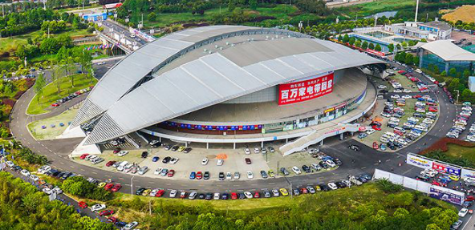

当前位置：正文
新闻中心

据了解，孙家栋、徐冠华等多名国内知名院士，以及政要领导、国内外北斗及相关产业技术机构和骨干企业的专家、学者、行业精英将出席会议，围绕“深化北斗应用 促进产业发展”的会议主题，就北斗应用产业的发展进行深入探讨，带来精彩绝伦的思想盛宴。此外，还将举办卫星导航与位置服务高端论坛及卫星导航与位置服务创新应用专题论坛。届时，将发布最新的行业信息，解读产业政策，交流新技术、新产品，表彰优秀企业，展示企业创新风采。
中国卫星导航与位置服务年会是行业内规模大、层次高、范围广且最具代表性的年度产业盛会。作为一个开放式的学术交流平台，年会一直引领北斗行业的创新发展，促进卫星导航系统的合作，为卫星导航产业发展做出了突出的贡献。
当前位置：正文
新闻资讯
苹果9月将发布新机 仍不愿接入北斗导航系统
据报道，苹果公司将于下月发布新款iPhone，在中国，一些粉丝和科技博主强烈呼吁苹果接入北斗导航系统以提高导航的精度。去年，iPhone X添加了两个主要的导航系统——欧洲的伽利略定位系统和日本的准天顶卫星系统QZSS，而中国北斗卫星导航系统则被排除在外。
“天琴计划”落子深圳：中国加速探索引力波，商业前景几何？
在全球探索引力波的梦想之旅中，有一批中国科学家的身影。在珠江口，由中国科学院院士、中山大学校长罗俊领衔的中山大学团队，正在进行一项雄心勃勃的引力波探测工程——“天琴计划”。7月30日，中山大学宣布，“天琴计划”空间引力波探测地面模拟装置重大科技基础设施正式立项。项目建设选址该校新落成的深圳校区，建设总投资预算超过10亿元人民币。
当前位置：正文
逸闻趣事
1.曾经车手可以“共享赛车”
上世纪五十年代的F1比赛和现如今的F1是截然不同的。赛车和赛道的安全性基本是不存在的。赛车的下压力非常小，最令人难以置信的是，车手可以共享同一台赛车。如果车队的1号车手退赛了，那么车队可以召回2号车手，然后让1号车手驾驶2号车手的赛车继续比赛。这种奇怪的赛制下一共出现过三次两位车手共同夺冠的情况。最让人记忆深刻的是1957年时，在英国大奖赛中，为Vanwall车队效力的Sterling Moss和Tony Brooks. 但是这样的结果对于两位车手和其他车队来说都不公平，所以最后这项奇葩的赛制就被取消了。
2.秦始皇盛怒
秦始皇性格变化无常，身边的大臣也都很敬畏他，有一次它偶然看到丞相李斯出行，车骑随从众多，甚是招摇，牛气冲天，就随口说了几句不满的话。没想到身边有个太监过后偷偷地把这件事告诉了李斯。这把李斯吓得，大为惊恐，于是以后每次出行都大大的减少了自己的车骑随从，再也不敢臭嘚瑟了。秦始皇明白这一定身边有人泄密，盛怒之下，将那天随侍在自己身边的太监都杀了。
3.邮寄胸腔
德国物理学家威廉·康拉德·伦琴（1845—1923年）在1895年发现了一种奇特的射线，被命名为X射线。有一天，伦琴收到了一封信：“伦琴先生，听说您发明的X射线可以透视人体。最近我的胸部有些发闷，我想检查一下我的胸腔是不是有问题，请给我寄一些X射线过来。”伦琴立即回信：“亲爱的先生，我们暂时还不能办理X射线的邮购业务。若方便的话，请您把您的胸腔寄过来。”
当前位置：正文
每日一笑
农夫山泉，有点虫。新闻发布会：关于农夫山泉有点虫的问题，是这样的，我们不生产矿泉水的，我们只是大自然的搬运工。这个嘛，是人人皆知的，在我们的广告中早有声明。既然是大自然，就会有虫虫，大自然如果没有虫虫，那还是大自然吗？最后，祝福大自然越来越美，虫虫多多益善！